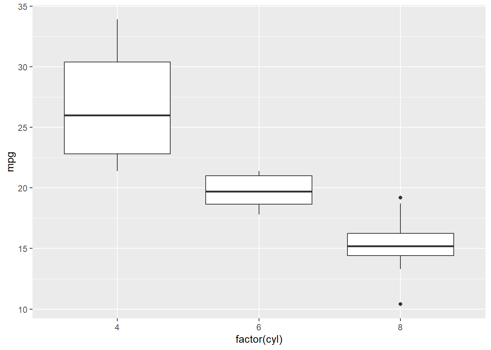
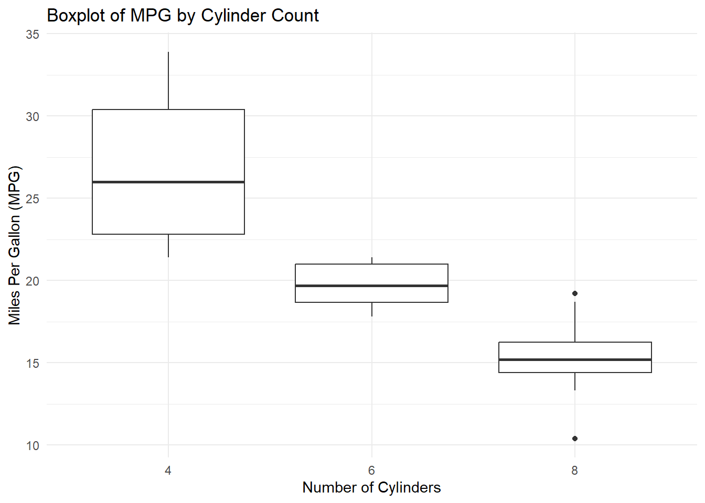

통계가 어렵게 느껴지는 이유는 단순히 숫자가 많기 때문이 아니다. 가장 큰 이유는 통계가 수학과 같은 규칙 기반 사고와는 전혀 다른 방식으로 작동하기 때문이다. 수학은 정답이 존재하고, 그 정답은 항상 같은 조건에서 동일하게 도출된다. 반면 통계는 애초에 정답이 없는 문제를 다루고, 불완전한 데이터에서 의미 있는 결론을 추론하는 학문이다.
수학에서는 2 + 2는 언제나 4이지만, 통계에서는 “이 매장에서 쿠폰 A를 준 이후 매출이 증가했다”는 사실이 있다고 해도 그게 ’쿠폰 때문’이라는 결론은 쉽게 내릴 수 없다. 실제로는 다른 마케팅이 동시에 진행되었을 수도 있고, 계절이나 날씨, 경쟁 매장의 변화 같은 외부 요인이 영향을 주었을 수도 있다. 통계는 이 모든 혼란을 전제로 한 채, 확률적으로 가장 설득력 있는 해석을 찾아가는 절차이다.
학생들은 자주 통계를 수학처럼 다루려 한다. 공식을 외우고, 수치를 계산하며, 기준값을 넘으면 결론을 도출하는 방식으로 접근한다. 그러나 통계는 오히려 질문을 만드는 과정이며, 모호한 현실에서 어떤 패턴이 반복적이고 의미 있는지를 판단하는 사고 체계다. 확신이 아니라 의심으로 시작하고, 불확실함 속에서 비교적 믿을 수 있는 해석을 만들어내는 것, 그것이 통계의 본질이다.
2.1.2 외식경영 현장에서 자주 발생하는 통계적 오해
외식업 현장에서는 통계적 사고 부족으로 인해 오해가 빈번하게 발생한다. 매출이 떨어졌을 때 단순히 “날씨가 나빴다”거나 “요즘 손님이 까다로워졌다”는 식의 설명으로 문제를 덮는 경우가 흔하다. 이런 해석은 아무런 데이터 근거가 없으며, 상황에 따라 무한히 바뀔 수 있는 주관적 설명에 불과하다.
예를 들어, 한 프랜차이즈 매장의 점주는 월요일 매출이 낮은 이유를 ‘직원 분위기’ 탓으로 돌렸다. 그러나 6개월치 데이터를 보면 매출이 낮은 날은 대부분 오전 비가 오는 날이었다. 실제로 비가 오는 날의 평균 매출은 18만 원, 맑은 날은 25만 원으로 뚜렷한 차이가 있었다. 직원의 태도는 인과가 아니라 결과에 가까운 해석이었다. 비가 와서 직원들의 기분이 좋지 않았을 것이고, 이런 날씨의 결과를 점주는 직원 탓으로 돌린 것이다. 통계는 이런 식의 직관적 오류를 교정하고, 행동 가능한 해석으로 나아가게 해주는 장치다.
또 다른 사례는 신규 메뉴 출시 후 판매율이 낮은 것을 ’메뉴 이름이 이상해서’라고 판단하는 경우다. 그러나 고객 피드백을 분석해 보면 가격이 기존 메뉴보다 높았고, 비슷한 메뉴와의 구분이 명확하지 않아 주문이 적었던 것이 핵심 원인일 수 있다. 이름은 가장 쉽게 보이는 변수였지만, 실제로는 분석을 하지 않으면 보이지 않는 변수들이 영향을 주는 것이다.
2.1.3 통계는 판단의 도구다
통계는 결론을 내리는 도구가 아니라, 결론에 도달하기 전에 여러 가능성을 검토하고 가장 설득력 있는 해석을 찾도록 돕는 판단 도구다. 비슷한 결과가 여러 번 반복되는지, 특정 조건에서만 나타나는 현상인지, 다른 변수와의 상관이 존재하는지 등을 따져보고, 그것이 우연인지 구조적인 차이인지를 추론하게 해준다.
외식업에서 새로운 메뉴를 런칭한 뒤 판매 추이를 확인하는 경우를 생각해보자. 첫 주에는 반응이 좋았지만, 둘째 주부터 급격히 판매가 줄었다면 그 이유는 단순히 “신기해서 한 번 시켰던 것”이 아닐 수도 있다. 요일별 판매 추이를 보면, 금요일에만 집중적으로 팔리고, 평일에는 거의 팔리지 않는 경우도 있다. 이럴 땐 마케팅 포인트를 ’이벤트 전용’으로 재설계할 수 있다. 판단이 없었다면 메뉴 자체를 실패작으로 간주하고 폐기했을 수도 있다. 통계는 단순히 수치를 보여주는 것이 아니라, 그 수치를 해석하는 렌즈다.
2.1.4 판단을 수치로 만든다는 것
사람은 늘 판단한다. 어떤 매장을 갈지, 어떤 메뉴를 고를지, 언제 방문할지 끊임없이 결정을 내린다. 하지만 대부분 그 판단은 감각에 의존한다. 만약 그 판단을 수치로 정리할 수 있다면 어떻게 될까. 그리고 그 수치에 신뢰할 수 있는 패턴이 숨어 있다면, 통계는 가장 강력한 경영 도구가 된다. 문제는 판단을 숫자로 번역하는 언어가 없다는 데 있고, 통계는 바로 그 언어를 제공한다.
2.2 기술통계와 추론통계는 무엇이 다른가
2.2.1 기술통계: 있는 데이터를 요약하는 도구
기술통계는 이름 그대로 데이터를 기술(describe) 하는 데 초점을 둔다. 이미 수집된 데이터를 요약하고 정리하는 것이 주된 역할이다. 여기에는 평균, 중앙값, 분산, 표준편차, 최소값, 최대값, 빈도수, 비율 등의 지표가 포함된다. 기술통계는 데이터를 정리할 뿐, 해석하거나 예측하는 기능은 하지 않는다.
예를 들어, 한 외식 브랜드에서 지난 30일간의 하루 매출을 정리했다고 하자. 기술통계는 이 데이터로부터 하루 평균 매출이 얼마였는지, 매출 변동이 큰 날은 언제였는지, 어느 요일에 매출이 높은지 등을 정리해줄 수 있다. 평균 매출이 85만 원이고, 표준편차가 20만 원이면 매출 변동성이 꽤 크다는 것도 알 수 있다. 그러나 이 정보만으로 다음 주 월요일 매출이 어떻게 될지 추측할 수는 없다. 기술통계는 ’지금까지 어떤 일이 벌어졌는가’를 설명하는 데 유용한 도구다.
2.2.2 추론통계: 표본을 통해 모집단을 판단
추론통계는 이름 그대로 추론(infer) 의 역할을 한다. 전체 데이터를 볼 수 없을 때, 일부 데이터를 기반으로 전체의 특성을 예측하거나 판단하는 데 사용된다. 표본(sample)을 바탕으로 모집단(population)에 대한 통계적 주장을 만든다. 이 과정에서는 확률, 오차, 신뢰도, p값 등의 개념이 필수적으로 따라붙는다.
예를 들어 한 외식 기업이 서울 지역 10개 매장에서 진행한 신메뉴 테스트 결과를 가지고 전국 매장 도입 여부를 결정하려고 한다고 하자. 10개 매장에서 신메뉴의 평균 매출이 12만 원이었고, 기존 메뉴 평균 매출보다 높았다면, 이는 전체 매장에도 긍정적일 가능성을 시사한다. 하지만 이 결과가 우연일 수도 있기 때문에 통계적 유의성(p값), 신뢰구간, 효과 크기 등의 추론적 판단 도구가 필요하다.
추론통계는 관찰된 데이터를 넘어서서 “전국 매장에서 비슷한 효과가 나타날 것이다” 혹은 “이 결과는 우연일 확률이 낮다”는 주장을 수치화할 수 있다. 이 주장은 확신이 아니라, 확률적으로 믿을 수 있는 근거에 기반한다.
2.2.3 두 영역이 분석 프로세스에서 만나는 지점
기술통계와 추론통계는 서로 독립된 영역이 아니며, 실제 분석에서는 연결된 연속적인 과정으로 작동한다. 분석은 먼저 기술통계를 통해 데이터를 정리하면서 시작되고, 이후 추론통계를 통해 가설을 검정하거나 예측을 시도한다.
외식 데이터 분석에서 이 둘은 다음과 같은 흐름으로 사용된다.
1. POS 데이터를 기반으로 최근 3개월간 메뉴별 판매량, 객단가, 방문자 수를 기술통계로 정리한다. 2. 이 정리된 결과를 바탕으로 특정 이벤트가 매출에 영향을 주었는지 판단하고자 할 때, 사전과 사후 데이터를 비교한다. 3. 이 비교는 t-test, 회귀분석, ANOVA 등 추론통계 기법을 통해 수행된다.
즉, 기술통계는 분석의 기초 작업, 추론통계는 의사결정의 논리적 정당화 역할을 수행한다.
2.2.4 외식 사례 비교: 기술통계 vs 추론통계
아래는 외식업 데이터를 기반으로 기술통계와 추론통계를 구분한 예시다.
분석 사례
기술통계적 접근
추론통계적 접근
신메뉴 반응 분석
신메뉴별 판매량, 평균 객단가 계산
기존 메뉴 대비 유의미한 차이 검정 (t-test)
프로모션 효과
프로모션 전·후 매출 평균 비교
프로모션이 매출에 미친 영향 추정 (회귀분석)
고객 성별 분석
남녀별 방문 비율, 평균 체류 시간
성별에 따른 재방문율 차이 검정 (카이제곱 검정)
리뷰 점수 요약
리뷰 별점, 재방문율에 미치는 영향
리뷰점수가 재방문에 영향을 주는지 (회귀분석)
이러한 사례는 분석 목적에 따라 기술통계와 추론통계가 서로를 보완하며 사용되어야 함을 보여준다. 기술통계는 문제를 이해하고 데이터를 정리하는 출발점이고, 추론통계는 그 정리가 실제 전략 결정에 신뢰도 있는 기반이 되는지를 검토하는 절차다.
2.2.5 데이터를 ’읽는 것’과 ’믿게 만드는 것’의 차이
단순히 데이터를 정리하는 것만으로는 의사결정권자를 설득할 수 없다. 경영 의사결정권자는 데이터가 아니라 근거 있는 주장을 원한다. 기술통계는 데이터를 이해하게 해주지만, 추론통계는 그 데이터를 믿게 만드는 도구다. 숫자 하나하나에 의미를 부여하고, 그 의미를 상대에게 설득력 있게 전달할 수 있을 때, 통계는 비로소 전략의 언어가 된다.
2.3 표본, 모집단, 오차 개념을 정확히 이해해야 하는 이유
2.3.1 모집단과 표본의 정의와 구분
모집단은 분석하고자 하는 전체 대상 집합이다. 외식산업에서는 전국의 고객, 전 매장, 전일의 매출처럼 분석 목적에 따라 모집단이 설정된다. 반면 표본은 이 모집단에서 일부만 추출한 데이터 집합이다. 현실적으로 전체를 측정하는 건 비용이나 시간 면에서 불가능에 가깝기 때문에, 대부분의 분석은 표본을 사용한다.
예를 들어 한 프랜차이즈 본사가 전국 500개 매장의 고객 리뷰를 분석하고 싶을 때, 전수 데이터를 다 수집하지 않고 대표성 있는 50개 매장을 표본으로 선택하는 방식으로 진행한다. 이때의 표본은 모집단을 ’추론’하기 위한 도구이며, 표본이 얼마나 잘 뽑혔는지가 분석 전체의 신뢰도를 결정한다.
그러므로, 표본은 대표성이 있어야 한다. 모든 고객이 아닌, 특정 연령대나 지역에만 치우쳐 있으면 그 표본은 왜곡된 결론을 유도할 수 있다. 표본을 다룰 때는 항상 이 표본이 어떤 모집단을 대표하는지, 그 표본이 어떻게 구성되었는지를 함께 고려해야 한다.
2.3.2 샘플링 오차와 표본 편향
표본을 사용하면 본질적으로 두 가지 오류가 발생할 수 있다. 첫 번째는 샘플링 오차이다. 이는 표본이 모집단을 완벽히 반영하지 못하면서 생기는 무작위적 오차이다. 샘플링 오차는 표본을 반복적으로 뽑아서 평균을 비교할 때마다 조금씩 값이 다른 것에서 나타난다. 표본의 크기가 작을수록 샘플링 오차는 커진다. 이 오차는 통계기법을 통해 계량화하거나 보정할 수 있다.
두 번째는 표본 편향이다. 이는 표본 추출 과정에서 특정 그룹이 과도하게 포함되거나 제외되면서 발생하는 체계적인 왜곡이다. 예를 들어, 점심시간 고객만을 대상으로 설문을 실시하면 저녁 고객의 행동은 전혀 반영되지 않는다. 이때 분석 결과는 무작위 오차가 아니라 구조적 왜곡을 내포하게 된다. 표본 편향은 통계적으로 보정하기 어렵기 때문에, 설계 단계에서 막는 것이 중요하다.
두 오차를 요약하면 아래와 같다.
구분
정의
발생 원인
해결 방법
샘플링 오차
무작위 표본 간의 자연스러운 차이
표본 크기, 샘플의 구성
표본 크기 확장, 통계적 추정
표본 편향
체계적 누락이나 과대표집
비대표성 샘플링
설계 개선, 층화 표본 등 설계 전 보완
2.3.3 외식업에서 발생하는 표본 문제의 실례
표본 편향은 외식업 실무에서 자주 발생한다. 한 프랜차이즈가 ’배달 앱 리뷰 점수’를 기준으로 매장 서비스를 평가했다고 가정하자. 이 방식은 리뷰를 작성하는 일부 고객만을 표본으로 삼는다. 문제는 리뷰를 남기는 고객은 대체로 아주 만족했거나, 매우 불만족했던 고객이 중심이라는 점이다. 즉, ’중간 만족도’를 가진 대다수 고객은 빠진다. 이 표본은 모집단인 전체 고객의 의견을 왜곡해서 보여준다.
또 다른 예는 신규 메뉴 출시 후 1주일간의 판매량을 보고 “이 메뉴는 실패”라고 판단하는 경우다. 1주일은 단기적 요인(날씨, 이벤트, 홍보 시점 등)에 크게 영향을 받을 수 있어 모집단을 대표하지 못하는 시기적 표본이다. 이 경우엔 표본 수집 기간 자체가 편향되어 있다는 점에서 해석이 위험하다.
한 외식 스타트업이 대학가 주변 3개 매장에서 설문조사를 실시하고, 이를 바탕으로 “20대 여성은 저탄수화물 메뉴를 선호한다”고 발표한 적도 있다. 해당 매장이 모두 다이어트 컨셉의 테마 카페였고, 이로 인해 이미 관심을 가진 고객만이 유입된 편향된 표본이었다. 모집단을 잘못 설정하거나 표본 추출이 잘못되면, 모든 분석 결과가 근거 없는 결론으로 흐른다.
2.3.4 숫자가 맞아도, 해석이 틀릴 수 있다
분석 결과가 정교한 숫자로 표현되었다고 해서 믿을 수 있는 결론이 되는 건 아니다. 표본이 왜곡되었으면 통계는 정확한 계산을 통해 틀린 해석을 만들어낸다. 오히려 수치가 명확하기 때문에 더 위험하다. 그래서 통계 분석에서 가장 먼저 점검해야 할 건 계산이 아니라, 그 계산이 누구를 대표하고 있는가라는 질문이다. 이 질문 없이는 데이터는 언제든지 의도된 왜곡을 정당화하는 도구가 될 수 있다.
2.4 평균과 표준편차는 왜 동시에 봐야 하는가?
2.4.1 평균의 대표성 한계
평균은 가장 널리 사용되는 요약 통계량이지만, 항상 대표성을 가지는 것은 아니다. 한 외식 프랜차이즈가 지난 한 달간 하루 매출 평균이 100만 원이었다고 발표했다고 가정하자. 이 수치는 안정적인 성과처럼 보일 수 있지만, 이 평균이 고르게 분포된 결과인지, 몇 날의 이상치에 의해 끌어올려진 결과인지는 알 수 없다.
예를 들어, 한 달 중 평일 25일 동안은 매출이 80만 원 수준이었고, 주말 특수 행사 5일 동안 220만 원씩을 기록했다면, 전체 평균은 분명히 100만 원이지만 대부분의 날은 이 수준에 미치지 못한다. 이때의 평균은 데이터를 과대 대표하며, 경영자의 착각을 유도할 수 있다. 실제 영업을 책임지는 매장 점주 입장에서는 이 평균이 실제 운영과 동떨어진 수치라는 점에서 문제가 된다.
2.4.2 분산과 표준편차의 해석
분산과 표준편차는 데이터의 퍼짐 정도, 즉 변동성(variability/volatility) 을 측정한다. 평균이 중심을 알려준다면, 표준편차는 데이터가 평균에서 얼마나 벗어나 있는지를 알려준다. 다시 말해, 표준편차는 ’평균 옆에 붙은 신뢰의 정도’라고 해도 과언이 아니다.
표준편차가 작다면 대부분의 데이터가 평균 근처에 밀집해 있다는 뜻이다. 반면 표준편차가 크면 데이터가 넓게 퍼져 있다는 뜻이다. 두 데이터셋이 같은 평균을 가질지라도, 표준편차가 다르면 전혀 다른 해석이 가능하다. 그래서 평균만으로는 의미 있는 판단을 내릴 수 없다.
두 매장의 평균 객단가는 모두 10,000원이지만, 표준편차는 A가 약 600원 수준이고, B는 약 15,000원 이상이다. 같은 평균이지만 고객 행태의 안정성은 전혀 다르다. 매장 A는 안정적 운영이 가능한 구조이지만, 매장 B는 특정 고액 소비자에 의존하는 불안정한 구조다.
이런 차이는 마케팅 전략에도 영향을 준다. 매장 B는 고객의 구매 금액에 따라 변동이 크기 때문에 로열티 프로그램, 프리미엄 메뉴 강조 전략 등이 더 효과적일 수 있다. 반면 매장 A는 평균 수준의 객단가 유지가 중요하므로, 가격 할인이나 세트 메뉴 구성이 핵심 전략이 된다.
2.4.4 표준편차가 전략을 바꾸는 경우
표준편차는 단순한 수학적 지표가 아니라 전략 결정의 핵심 요인이 될 수 있다. 한 커피 프랜차이즈가 동일한 평균 매출을 가진 두 매장을 비교했다고 가정하자. A매장은 매출이 매일 95~105만 원 사이로 일정하게 유지되고, B매장은 어떤 날은 50만 원, 어떤 날은 200만 원까지 뛰는 식으로 심한 변동성을 가진다.
이때 매장 운영 전략은 달라질 수밖에 없다. A매장에는 인력 배치를 고정화하고, 재고 수준도 안정적으로 가져갈 수 있다. 반면 B매장은 예측 불가능한 수요에 대비한 유동적인 인력 운용과 재고 확보 전략이 필요하다. 같은 평균, 다른 리스크가 존재하는 것이다.
마찬가지로 광고 캠페인의 효과를 분석할 때도 평균 매출만 비교하면 착오가 생길 수 있다. 만약 캠페인 시행 후 표준편차가 급격히 커졌다면, 이는 일부 고객층에게는 매우 강한 반응을 얻었지만 다수는 무반응이었다는 신호일 수 있다. 즉, 평균의 상승이 모든 고객의 만족으로 연결된 것이 아닐 수 있다.
2.4.5 평균은 모든 것을 말해주지 않는다
평균만 믿고 전략을 세우면 함정에 빠질 수 있다. 숫자는 전체를 말하는 것 같지만, 실제로는 아무것도 말하지 않을 수도 있다. 마치 음식의 평균 온도가 적당하다고 해서, 그 안의 고기까지 익었다는 보장이 없는 것처럼, 데이터의 평균도 전체 상황을 가려버릴 수 있다. 그래서 평균을 본다면, 반드시 표준편차도 같이 봐야 한다. 그래야 진짜 모습을 볼 수 있다.
또한, 통계란 분산(표준편차)의 마법이다. 우리가 하는 통계적 분석은 분산(표준편차)가 없다면 불가능하다. 그러므로, 항상 평균과 함께 표준편차를 유심히 관찰하는 것이 분석의 시작이며 전략의 기초이다.
2.5 p-값은 왜 남용되며, 왜 위험한가?
2.5.1 p-value의 정의와 통계적 유의성의 의미
p-value는 관측된 데이터가 귀무가설(null hypothesis) 하에서 발생할 확률을 의미한다. 더 정확히 말하면, 표본에서 관측된 통계치가 우연히 이렇게 극단적인 결과를 만들 확률을 계산하는 값이다. p값이 작다는 것은, 현재의 결과가 우연으로 보기 어려울 정도로 이례적이라는 뜻이다. 이 기준선으로 흔히 사용하는 값이 0.05이며, 만약 , p-value가 이를 넘으면 ’통계적으로 유의미하지 않다’고 판단한다.
하지만 여기서 혼동이 생긴다. p값은 연구 가설이 맞을 확률이 아니라, 단지 귀무가설 하에서 우연히 결과가 나올 확률일 뿐이다. 이 차이를 이해하지 못하면 p값을 잘못 해석하게 된다. 또한 p값은 데이터의 품질, 연구 설계, 표본의 대표성 등과는 무관하게 계산되기 때문에, 해석에 신중함이 필요하다.
2.5.2 유의미 ≠ 중요 / 무의미 ≠ 무효
통계적으로 유의미하다는 말은 실무에서 중요한 의미를 가지지 않을 수 있다. 어떤 외식 브랜드의 고객 만족도 설문에서, 두 점포 간 평균 점수 차이가 0.12점이고, p값이 0.03으로 유의미하다고 하자. 그런데 이 0.12점은 실제로 고객 경험이나 행동을 바꿀 만큼의 차이는 아닐 수 있다. 즉, 유의미하다고 해서 반드시 중요하지는 않다.
반대로, 두 점포 간의 매출 차이가 하루 평균 50만 원이고, p값은 0.08이라 유의미하지 않다고 판단된 경우도 생각해보자. 이 차이는 매장 운영에는 중대한 결과를 초래할 수 있다. 만약, 표본의 크기가 작거나 데이터의 분산이 커서 p값이 0.05를 넘은 것이라면, 무의미하다고 해서 그 차이가 실제로 존재하지 않는 것은 아니다. 영어로 “Statistical significance is not the practical significance.”라는 표현이 있다. 통계적 유의성이 어떠한 절대적 진리가 아니라는 것이다. 5%는 경우에 따라 매우 큰 값일 수도 있고, 혹은 너무 작은 값일 수도 있다.
p값은 일종의 신호지표일 뿐이며, 그 자체가 결론이 되어서는 안 된다.
2.5.3 외식업 리뷰, 매출 차이 사례로 p값 해석 실습
한 프랜차이즈가 A지역과 B지역 매장의 배달앱 리뷰 점수를 비교했다고 하자. A지역 평균 평점은 4.65점, B지역은 4.57점이고 p값은 0.02였다. 이 결과만 보면 A지역이 ’우월’한 매장처럼 보인다. 하지만 리뷰 수를 보면 A지역은 700개, B지역은 80개였다. 리뷰 수가 적은 B지역은 분산이 크고 극단값의 영향이 커서 p값이 작게 나왔을 가능성이 있다. 이 경우 p값보다는 데이터 분포의 구조와 표본 크기를 먼저 확인해야 한다.
또 다른 사례는 신메뉴 출시에 따른 매출 차이다. 신메뉴 도입 후 일평균 매출이 10% 상승했고, t-test 결과 p값이 0.06이 나왔다. 이 수치를 보고 ’통계적으로 유의미하지 않으므로 실패’라고 해석한다면, 매출에 미치는 전략적 효과를 간과하는 위험한 결론이 된다. 실제로는 시즌성 요인이나 점포별 편차를 반영해야 하고, 단일 p값만으로 결론을 내리는 건 무리다.
2.5.4 해석 오류를 유발하는 전형적 착각들
가장 흔한 착각은 p값이 ’0.01이면 99% 확률로 연구가설이 맞다’고 생각하는 것이다. 하지만 p값은 귀무가설 하에서 데이터를 관찰할 확률이지, 연구가설이 참일 확률이 아니다. 이 점을 혼동하면 모든 해석이 무너진다.
또 하나의 오류는 p < 0.05이면 무조건 “의미 있다”고 선언하는 것이다. 외식업 실무에서 이 기준은 수치의 중요도를 판단하는 척도와는 무관하게 사용되는 경우가 많다. 예를 들어, 고객 재방문율이 1.2%p 차이가 나면서 p값은 0.04인 경우, 마케팅 전략을 바꿀 정도의 차이가 아니더라도 ’효과가 있다’고 보고서를 제출하게 된다. 이는 수치의 ’실질적 중요성’을 무시한 판단이다.
마지막으로, 연구자가 여러 번 분석을 시도하거나 여러 변수 중 하나에서만 유의미한 p값이 나왔을 때 그 결과만 인용하는 것도 문제다. 이를 p-hacking이라 하며, 사실상 우연을 ’발견’한 것처럼 포장하는 행위에 가깝다. 실무에서는 이런 p-hacking 결과를 보고 전략을 바꾸는 일이 비일비재하지만, 이는 재현성 없는 의사결정으로 이어질 수 있다.
2.5.5 p값이 작을수록 진실에 가까운가?
많은 사람이 p값이 작으면 진실에 더 가까워졌다고 착각한다. 하지만 p값은 진실의 확률이 아니라, 귀무가설 하에서 얼마나 이상한 결과가 나왔는지에 대한 수치일 뿐이다. 진실을 말하는 게 아니라, ’이상함’을 말하는 숫자다. 그래서 p값은 해석에 앞서 항상 데이터의 맥락, 설계의 목적, 그리고 실제 의미를 고려해야 한다. 그렇지 않으면, p값은 가장 과학적인 얼굴을 한 채, 가장 위험한 결론을 유도하는 살인무기가 된다.
2.6 통계적 가설과 오류의 개념
2.6.1 귀무가설과 대립가설은 어떻게 작동하는가?
모든 통계적 검정은 가설로부터 시작한다. 여기서 말하는 가설은 ’추측’이나 ’주장’이 아니다. 검정 가능한 명제로서의 가설이다. 이때 가장 먼저 설정되는 가설은 귀무가설(null hypothesis) 이며, 이는 보통 “차이가 없다:”, “효과가 없다”, “변화가 없다”는 내용을 담는다. 예를 들어, 신메뉴를 출시했을 때, “신메뉴 출시 전후 매출의 차이는 없다”는 것이 귀무가설이다.
반대로, 대립가설(alternative hypothesis) 은 “차이가 있다”, “효과가 있다”는 내용을 가진다. 즉, “신메뉴 출시 후 매출이 증가했다”는 가설이다. 모든 통계 검정은 귀무가설을 기각할 수 있는지를 판단하는 구조로 진행된다. 귀무가설이 기각되면 대립가설을 채택하는 것이고, 기각되지 않으면 아무것도 증명된 것이 아니다.
2.6.2 제1종 오류와 제2종 오류의 차이
통계적 판단에는 언제나 오류 가능성이 존재한다. 두 가지 중요한 오류가 있다. 하나는 제1종 오류(Type I Error) 이며, 이는 ’실제로는 차이가 없는데 차이가 있다고 판단하는 오류’를 말한다. 즉, 귀무가설이 참인데도 불구하고 잘못 기각하는 것이다. 보통 p값 기준인 0.05가 이 오류의 확률로 간주된다.
반대로, 제2종 오류(Type II Error) 는 ’실제로 차이가 있는데 없다고 판단하는 오류’이다. 즉, 대립가설이 참인데도 불구하고 귀무가설을 기각하지 못하는 경우다. 이 오류는 보통 충분한 표본 수를 확보하지 못하거나, 효과 크기가 작아서 발생한다.
아래 표는 두 오류를 직관적으로 요약한 것이다:
실제 상황
판단 결과
오류 여부
차이 없음
차이 없음으로 판단
옳은 판단
차이 없음
차이 있음으로 판단
제1종 오류
차이 있음
차이 없음으로 판단
제2종 오류
차이 있음
차이 있음으로 판단
옳은 판단
2.6.3 외식업에서 발생하는 오류 사례
한 프랜차이즈가 ‘할인 쿠폰’ 마케팅의 효과를 측정한다고 가정해보자. 이벤트 도입 전후 한 달간의 매출을 비교했더니 p값이 0.03이 나와 귀무가설이 기각되었다. 이때 회사는 ’할인 쿠폰이 효과가 있다’고 결론을 내리고 전 매장에 이를 도입한다. 그러나 나중에 확인해보니, 매출 증가는 계절적 요인(예: 졸업 시즌)과 신입생 유입 때문이었다. 차이는 있었지만, 원인은 마케팅이 아니었다. 이는 제1종 오류에 해당하며, 잘못된 인과 판단으로 인해 전국적인 전략을 잘못 배치하게 되는 결과로 이어졌다.
또 다른 사례는 신메뉴 테스트에서 나타난다. 10개 매장에서 신메뉴를 시범적으로 도입했지만, p값은 0.07로 유의미하지 않았다. 그러나 실제로는 매장 환경의 차이, 직원 교육 정도, 메뉴 노출 방식 등 외적 요인이 효과를 희석시켰을 뿐, 실제로 신메뉴는 구매율을 높이고 있었다. 이는 제2종 오류의 사례이며, 성급하게 ’무효’라고 판단한 결과 시장 기회를 놓치게 된다.
2.6.4 오류 없는 통계는 없다
통계는 언제나 확률적 판단을 기반으로 한다. 따라서 100% 확신을 주는 해석은 존재하지 않는다. 오히려 통계의 강점은 ‘불확실성을 인정하고, 그 속에서 얼마나 신뢰할 수 있는 판단을 하느냐’에 있다. 마치 음식이 언제나 약간 덜 익거나 지나치게 익을 수 있는 것처럼, 데이터도 항상 완전하진 않다. 중요한 것은 그 불완전함을 이해하고 해석하는 능력이며, 이를 위해선 통계적 오류를 반드시 알고 있어야 한다.
2.7 변수의 유형은 분석을 결정짓는다
2.7.1 변수의 기본 분류 체계: 명목 / 순서 / 구간 / 비율
변수란 수집한 데이터를 의미 있게 분류하거나 분석하기 위한 기준이 되는 속성이다. 통계학에서는 변수를 측정 수준에 따라 네 가지로 분류한다. 이는 단순한 분류가 아니라, 이후 적용 가능한 분석 기법과 시각화 방식, 해석의 수준을 결정짓는 핵심 구조가 된다.
- 명목 변수(nominal): 이름이나 분류만 가능한 변수로, 수치 간의 순서나 크기 비교는 불가능하다. 예: 고객의 성별, 점포 위치, 메뉴 유형. - 순서 변수(ordinal): 명목 변수처럼 범주화되지만, 일정한 순서 또는 등급이 존재한다. 예: 고객 만족도(불만족 < 보통 < 만족), 직원 근속 연차 등급. - 구간 변수(interval): 수치 간의 간격이 의미 있으며, 0의 위치가 임의적이다. 예: 기온, 날짜(연도), 시험 점수. - 비율 변수(ratio): 구간 변수의 성질을 가지면서 절대적 0을 포함하는 변수다. 예: 매출액, 고객 수, 주문 건수, 식사 시간.
이 네 가지 분류는 단순히 ’개념’으로서 중요한 것이 아니라, 분석 방법 선택과 해석의 전제에 직접 연결되므로 분석 실무에 있어 가장 결정적인 출발점이 된다.
2.7.2 변수 유형에 따라 분석 기법이 달라지는 구조
예를 들어, 고객의 성별에 따른 평균 매출 차이를 분석한다고 할 때 성별은 명목 변수, 매출은 비율 변수다. 이 경우 t-test를 통해 두 집단 간 평균 차이를 분석할 수 있다. 반면, 고객 만족도를 분석 대상으로 한다면 만족도 점수는 순서 변수이기 때문에, 평균 비교보다는 순서 기반의 비모수 분석 기법이 이론상으로는 적합하다. 이론상이라고 표현하는 이유는 과거에는 이 문제로 상당한 논란이 있었으나, 현재는 거의 모든 연구에서 만족도를 순서 변수라기 보다는 비율 변수처럼 사용하기 때문이다. 왜 그런지 설명해보자.
또한, 비율 변수 간 관계를 보고자 한다면 회귀분석이 가능하지만, 명목 변수 간 관계라면 교차분석이 먼저 적용된다. 예컨대, 메뉴 종류와 고객 성별 간의 관련성을 알고 싶을 때는 카이제곱 검정이 적절하고, 고객 수와 매출액 간의 관계는 상관분석 또는 회귀분석이 적합하다.
즉, 변수의 유형을 잘못 분류하거나 혼동하면, 분석 기법 자체가 무효화되거나 해석이 왜곡될 수 있다.
2.7.3 실전 예시: 외식 매장 데이터를 변수 유형별로 분류
아래는 가상의 외식 매장에서 수집한 데이터 일부를 예시로 들고, 각각의 변수를 올바르게 분류한 표이다.
변수명
변수 설명
유형
branch_id
점포 고유번호
명목형
customer_type
단골 / 일반 / 신규
순서형
meal_price
1회 평균 식사 가격
비율형
visit_day
고객 방문 요일
명목형
satisfaction
만족도 (1~5점 척도)
순서형
service_time
식사 시간 (분 단위)
비율형
review_score
앱 리뷰 점수 (1~5점)
구간형
학생들이 자주 혼동하는 예는 ’리뷰 점수’의 유형이다. 많은 경우 이를 비율형으로 간주하고 평균을 계산하지만, 사실 리뷰 점수는 구간형 혹은 순서형으로 보는 것이 타당하다. ’4점과 2점의 차이’가 ’2점과 0점의 차이’와 같은 의미를 가지지 않기 때문이다. 앞서 설명한대로 이론상으로는 그렇다. 그러나 현실적으로 리뷰 점수를 비율형으로 보지 않을 경우 사용 가능한 통계적 방법이 매우 제한되는 한계점이 있다. 사실 그래서 많은 경우 이를 비율형으로 보고 분석하는 경우가 대부분이다. 하지만, 이 변수의 특성과 원래의 고유한 성향을 이해하고 있는 것은 매우 중요하다.
2.7.4 잘못된 변수 분류가 초래하는 분석 실패 사례
서울의 한 외식 프랜차이즈는 고객의 재방문 여부를 예측하기 위해 고객 만족도 점수를 비율 변수로 오해하고 회귀분석을 적용했다. 그러나 만족도 점수는 순서형 변수였고, 분석 결과는 극단값에 민감한 왜곡된 회귀계수를 초래했다. 이를 기반으로 마케팅 전략을 수립한 결과, 오히려 고객 충성도가 높은 집단이 배제되는 역효과가 발생했다. 현실적으로 가능한 시나이로이긴 하지만, 고객 만족도를 비율 변수가 아닌 순서형 변수로 보고 분석할 수 있는 방법은 사실상 거의 없다는 것이 문제이다.
또 다른 예는 신규 매장 입지를 선정하기 위해, 점포 위치(지역)를 수치형 변수로 잘못 처리한 경우이다. 강남=1, 홍대=2, 건대=3 등의 인코딩을 통해 회귀모형에 입력했으나, 이러한 변수는 명목형 변수로 다루어야 하며, 수치 간 의미 있는 거리나 순서가 존재하지 않는다. 그 결과, 해석 자체가 의미 없는 상관관계로 나타나 분석이 실패로 돌아갔다. 이 경우는 심각한 문제를 초래할 수 있다.
2.7.5 변수를 잘못 분류하면, 분석은 시작도 전에 망가진다
분석은 변수를 수집하는 데서 시작되지 않는다. 변수를 제대로 분류하는 순간부터 분석이 시작된다. 어떤 변수는 숫자처럼 보여도 계산이 불가능하고, 어떤 변수는 숫자가 없어도 강력한 분석의 단서가 된다. 이 미묘한 구분을 무시하면, 아무리 정교한 통계 기법도 엉뚱한 해석과 잘못된 전략을 도출할 뿐이다.
2.8 분석 실습: 외식 데이터를 통한 변수 해석과 AI 도구 활용
2.8.1 실습 개요
이 실습에서는 데이터셋(mtcars)을 기반으로 각 변수의 측정 수준을 분류하고, 이를 기반으로 간단한 기술통계 분석을 수행한다. Copilot과 ChatGPT를 활용하여 프롬프트 작성 능력을 향상시키고, 통계 해석에 대한 직관적 이해를 유도한다.
package 'tidyverse' successfully unpacked and MD5 sums checked
The downloaded binary packages are in
C:\Users\who4u\AppData\Local\Temp\RtmpUfe3Jd\downloaded_packages
mpg cyl disp hp
Min. :10.40 Min. :4.000 Min. : 71.1 Min. : 52.0
1st Qu.:15.43 1st Qu.:4.000 1st Qu.:120.8 1st Qu.: 96.5
Median :19.20 Median :6.000 Median :196.3 Median :123.0
Mean :20.09 Mean :6.188 Mean :230.7 Mean :146.7
3rd Qu.:22.80 3rd Qu.:8.000 3rd Qu.:326.0 3rd Qu.:180.0
Max. :33.90 Max. :8.000 Max. :472.0 Max. :335.0
drat wt qsec vs
Min. :2.760 Min. :1.513 Min. :14.50 Min. :0.0000
1st Qu.:3.080 1st Qu.:2.581 1st Qu.:16.89 1st Qu.:0.0000
Median :3.695 Median :3.325 Median :17.71 Median :0.0000
Mean :3.597 Mean :3.217 Mean :17.85 Mean :0.4375
3rd Qu.:3.920 3rd Qu.:3.610 3rd Qu.:18.90 3rd Qu.:1.0000
Max. :4.930 Max. :5.424 Max. :22.90 Max. :1.0000
am gear carb
Min. :0.0000 Min. :3.000 Min. :1.000
1st Qu.:0.0000 1st Qu.:3.000 1st Qu.:2.000
Median :0.0000 Median :4.000 Median :2.000
Mean :0.4062 Mean :3.688 Mean :2.812
3rd Qu.:1.0000 3rd Qu.:4.000 3rd Qu.:4.000
Max. :1.0000 Max. :5.000 Max. :8.000
또는 VS Code에서 새 파일을 누르고 r document를 설정한 뒤에 위의 작업을 진행해도 된다. VS Code에서 우측 창은 Copilot 창이다.
2.8.3 실습 1: 변수의 유형 분류 실습
아래 표를 참고하여 mtcars의 각 변수에 대해 명목형 / 순서형 / 구간형 / 비율형으로 분류하고, 그 이유를 설명한다. 분석 도구로 Copilot의 자동 설명 또는 ChatGPT를 사용한다.
변수명
설명
측정 수준 예상
설명
mpg
연비 (Miles per Gallon)
비율형
cyl
실린더 수
순서형 또는 명목형
hp
마력
비율형
am
변속기 종류 (0 = 자동)
명목형
gear
기어 수
순서형 또는 명목형
ChatGPT 프롬프트 예시:
다음 R 변수의 측정 수준을 설명해줘: mpg, cyl, hp, am, gear
2.8.4 실습 2: 기술통계 요약 실습
과제 1: 실린더 개수 별로 연비의 평균과 표준편차 구하기
# 일반적인 교재의 코드mtcars %>%group_by(cyl) %>%summarise(mean_mpg =mean(mpg), sd_mpg =sd(mpg))
Summarize mpg by cyl with mean and sd in tidyverse
실린더 수(cyl)별로 연비(mpg)의 평균과 표준편차를 구하는 r 코드를 만들어줘.
# Calculate mean and standard deviation of mpg by cylmpg_stats <- mtcars %>%group_by(cyl) %>%summarise(mean_mpg =mean(mpg, na.rm =TRUE),sd_mpg =sd(mpg, na.rm =TRUE) )mpg_stats
# 일반적인 교재의 코드ggplot(mtcars, aes(x =factor(cyl), y = mpg)) +geom_boxplot()

Copilot 프롬프트 예시: 실린더 수 별로 박스 플롯 그려줘.
# Create a boxplot of mpg by cylggplot(mtcars, aes(x =factor(cyl), y = mpg)) +geom_boxplot() +labs(title ="Boxplot of MPG by Cylinder Count",x ="Number of Cylinders",y ="Miles Per Gallon (MPG)" ) +theme_minimal()

우리는 앞서 통계학의 변수의 종류가 명목/순서/구간/비율형의 네 가지가 있다는 알았다. 그렇다면 R에서는 어떨까?
통계에서 말하는 변수의 네 가지 유형
통계학에서 변수는 측정 수준에 따라 다음 네 가지로 구분된다.
1.명목형(Nominal): 이름만 있고 순서가 없는 변수. 예: 성별, 지역, 매장명 2.순서형(Ordinal): 순서가 있지만 간격은 불분명한 변수. 예: 만족도(1~5), 등급(A/B/C) 3.구간형(Interval): 간격은 의미 있으나 절대적 0이 없는 변수. 예: 온도(섭씨), 날짜 4.비율형(Ratio): 간격과 0의 기준이 모두 있는 변수. 예: 매출, 객단가, 방문시간
이 구분은 어떤 통계분석 기법을 사용할 수 있는지를 결정한다. 예를 들어, 비율형 변수는 평균과 표준편차를 사용할 수 있지만, 명목형 변수는 빈도나 비율만 사용해야 한다.
R에서는 이 4가지로 처리하지 않는다
R에서는 변수의 데이터 유형을 다음과 같은 컴퓨터가 처리할 수 있는 구조적 자료형으로 구분한다.
R의 자료형
설명
통계 유형과의 대응 가능성 예시
numeric
실수형 숫자 (연속형 수치)
비율형 (예: 매출, 객단가)
integer
정수형 숫자
순서형, 비율형 가능
character
문자 데이터 (텍스트, 이름 등)
명목형
factor
범주형 자료. 내부적으로 숫자로 저장됨
명목형 또는 순서형
ordered factor
순서를 가진 범주형. factor보다 순서정보 포함
순서형
logical
참/거짓 (TRUE/FALSE)
이진형 명목형 또는 조건 변수
Date
날짜형 자료
구간형(날짜 간격 계산 가능)
왜 혼동이 발생하는가?
’factor’는 R에서 범주형 변수를 의미하지만, 이것이 항상 통계적 의미의 명목형인 것은 아니다. 예를 들어 ’satisfaction_level’이 1~5로 표현되어 있을 때, 이를 factor로 처리하면 R은 이를 텍스트처럼 다루지만 통계적으로는 순서형 변수에 해당한다.
또 다른 예로, R에서 ’numeric’으로 저장된 변수라도, 실제로는 코드값(예: 1=남성, 2=여성)을 의미하는 경우는 명목형 변수로 해석해야 한다. R은 이 차이를 모른다. 분석가는 이 변수의 의미를 정확히 알고, 적절히 factor() 또는 as.numeric() 등을 사용하여 명시적 형태변환을 해줘야 한다.
실습 예시
# 성별이 코드값으로 되어 있는 경우gender <-c(1, 2, 1, 2, 1) # 여기서 c는 column을 의미한다summary(gender)
Min. 1st Qu. Median Mean 3rd Qu. Max.
1.0 1.0 1.0 1.4 2.0 2.0
Min. 1st Qu. Median Mean 3rd Qu. Max.
"2023-01-01" "2023-01-02" "2023-01-03" "2023-01-03" "2023-01-04" "2023-01-05"
diff(visit_date) # 날짜 간격 계산 → 구간형 처리 가능
Time differences in days
[1] 2 2
그렇다면, 이제 다시 원래의 데이터로 돌아와서 위의 표에서 우리가 변수별로 구분한 변수의 형태와 실제 데이터상의 변수의 형태를 비교해보고 이를 바꿔보자.
Copilot 프롬프트 예시: 변수 cyl의 변수형태가 무엇인지 확인해줘.
# Check the variable type of cylclass(mtcars$cyl)
[1] "numeric"
Copilot 프롬프트 예시: 실린더 수를 순서형 변수로 바꿔줘.
# Convert cyl to an ordered factormtcars$cyl <-factor(mtcars$cyl, ordered =TRUE)
이제 위와 같은 방식으로 데이터의 변수형태를 모두 원래의 변수의 형태에 맞게 바꿔보자. 바꾸기 전에 summary(변수명)을 해보고 바꾼 후에 다시해서 비교해 보자.
“숫자처럼 보인다고 다 숫자가 아니다”
R은 숫자든 문자든 그냥 저장한다. 하지만 분석가는 그게 ’무엇을 뜻하는지’를 해석해야 한다. 고객등급을 1, 2, 3으로 저장했다고 해서 그 차이가 모두 1이라고 말할 수는 없다. 같은 숫자라도 때로는 명목형일 수 있고, 때로는 순서형일 수 있다. 이 의미를 읽는 능력이야말로 분석의 시작이다.
과제 2: 명목 변수의 빈도표 구하기
# 일반적인 교재의 코드table(mtcars$am)
0 1
19 13
prop.table(table(mtcars$am))
0 1
0.59375 0.40625
Copilot 프롬프트 예시: am 은 명목변수야. 이 변수를 명목변수로 바꾸고 빈도표를 구해줘.
# Convert am to a nominal factormtcars$am <-factor(mtcars$am)# Frequency table for amtable(mtcars$am)
0 1
19 13
Copilot 프롬프트 예시: am의 빈도표와 함께 비율도 같이 구해줘.
# Frequency table and proportions for amfreq_table_am <-table(mtcars$am)prop_table_am <-prop.table(freq_table_am)list(Frequency = freq_table_am, Proportion = prop_table_am)
store_id: 매장 고유 ID location: 매장 위치 (강남, 홍대, 건대, 이태원, 명동) avg_spend: 1인당 평균 지출 금액 (5,000~25,000원) visit_time: 평균 체류 시간 (10~120분) membership: 고객 유형 (일반, VIP) satisfaction: 고객 만족도 (1~5점 척도)
1. 각 변수의 통계적 측정 수준을 판단하고, 그 이유를 설명한다. (명목/순서/구간/비율 구분) 2. ‘location’과 ’avg_spend’ 간의 관계를 분석한다. 지역별 평균 지출 차이가 통계적으로 유의한지를 확인한다. 3. ‘membership’ 유형에 따라 ‘satisfaction’ 평균이 다르다고 주장할 수 있는가? 간단한 기술통계와 시각화를 통해 판단한다. 4. ‘visit_time’과 ’avg_spend’ 사이에 상관관계가 있다고 말할 수 있는가? 산점도와 상관계수를 통해 해석해보라.
위의 질문을 VS Code + Copilot이나 ChatGPT에게 물어보고 판단해보라.
각 단계에서 AI의 답변이 통계적 맥락과 맞는지, 해석이 타당한지 스스로 평가한다. 필요한 경우 결과를 왜곡하거나 해석 오류를 일으킬 수 있는 요인을 찾아 리포트한다.
2.8.7 마무리 질문: 해석은 숫자를 넘어선다
1. ‘cyl’(실린더 수)는 R에서는 숫자로 저장되어 있다. 이 변수를 비율형으로 취급하는 것이 적절한가? 2. ‘p-value’가 0.001일 때, “효과가 크다”고 단정해도 되는가? 3. ’gear’(기어 수)와 ‘mpg’(연비) 간의 관계를 분석했더니 유의한 차이가 없다고 나온다. 이것이 정말 관련이 없다는 뜻인가? 4. 같은 분석 결과라도 해석이 달라질 수 있는 실제 외식업 사례는 어떤 것이 있을까? 5. 오늘 실습한 내용 중에서 AI가 자동화할 수 없는 부분은 무엇이었는가?
2.8.8 AI는 코드를 쓰지만, 책임은 분석가에게 있다
분석 결과가 말하는 의미는 데이터와 맥락, 해석자의 질문 능력에 달려 있다. 같은 p-값, 같은 표준편차도 비즈니스 상황에 따라 의미는 전혀 달라진다. AI는 도구일 뿐이다. 변수의 유형을 잘못 파악하거나, 통계의 맥락을 무시하면 아무리 화려한 분석도 틀릴 수밖에 없다. 진짜 통계는 해석에서 시작된다.